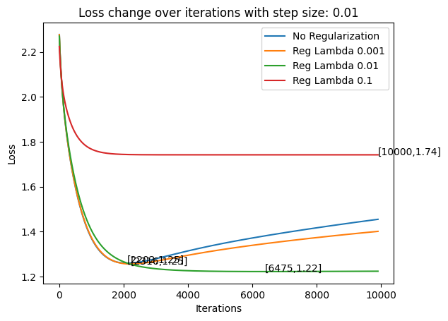

deffeature_normalization(train: np.ndarray, test: np.ndarray) -> [np.ndarray, np.ndarray]: """Rescale the data so that each feature in the training set is in the interval [0,1], and apply the same transformations to the test set, using the statistics computed on the training set. Args: train - training set, a 2D numpy array of size (num_instances, num_features) test - test set, a 2D numpy array of size (num_instances, num_features) Returns: train_normalized - training set after normalization test_normalized - test set after normalization """ min_value: np.ndarray = np.min(train, axis=0) max_value: np.ndarray = np.max(train, axis=0)
for index inrange(len(max_value)): if min_value[index] == max_value[index]: min_value[index] = 0
Given a set of X, y, theta, compute the square loss for predicting y with X*theta loss func: $J(\theta)=\frac{1}{2m}\sum{i=1}^{m}(h{\theta}(xi)-y_i)^2$ In matrix formulation, $h{\theta}(x_i)=\theta ^{T}x_i$ So $J(\theta)=\frac{1}{2m}(X\theta^{T}-y)(X\theta^{T}-y)^{T}$
1 2 3 4 5 6 7 8 9 10 11 12 13 14 15 16 17 18 19
defcompute_square_loss(X: np.ndarray, y: np.ndarray, theta: np.ndarray) -> float: """ Given a set of X, y, theta, compute the square loss for predicting y with X*theta Args: X - the feature vector, 2D numpy array of size (num_instances, num_features) y - the label vector, 1D numpy array of size (num_instances) theta - the parameter vector, 1D array of size (num_features) Returns: loss - the square loss, scalar """
defcompute_square_loss_gradient(X: np.ndarray, y: np.ndarray, theta: np.ndarray) -> np.ndarray: """ Compute gradient of the square loss (as defined in compute_square_loss), at the point theta. Args: X - the feature vector, 2D numpy array of size (num_instances, num_features) y - the label vector, 1D numpy array of size (num_instances) theta - the parameter vector, 1D numpy array of size (num_features) Returns: grad - gradient vector, 1D numpy array of size (num_features) """
num_instances = X.shape[0] difference: np.ndarray = np.dot(X, theta) - y grad = 1.0 / (num_instances+0.0) * np.dot(difference.T, X) return grad
Gradient Check
Check that the function compute_square_loss_gradient returns the correct gradient for the given X, y, and theta. For all directions: let $e_1 = (1,0,0,\dots,0), e_2 = (0,1,0,\dots,0), \dots, e_d = (0,\dots,0,1)$ Use approximation: for each direction Then for each direction of gradient, check if Euclidean distance of approximation and computed is exceed tolerance(1e-4 default)
defgrad_checker(X: np.ndarray, y: np.ndarray, theta: np.ndarray, epsilon=0.01, tolerance=1e-4) -> bool: """Implement Gradient Checker Check that the function compute_square_loss_gradient returns the correct gradient for the given X, y, and theta. Let d be the number of features. Here we numerically estimate the gradient by approximating the directional derivative in each of the d coordinate directions: (e_1 = (1,0,0,...,0), e_2 = (0,1,0,...,0), ..., e_d = (0,...,0,1) The approximation for the directional derivative of J at the point theta in the direction e_i is given by: ( J(theta + epsilon * e_i) - J(theta - epsilon * e_i) ) / (2*epsilon). We then look at the Euclidean distance between the gradient computed using this approximation and the gradient computed by compute_square_loss_gradient(X, y, theta). If the Euclidean distance exceeds tolerance, we say the gradient is incorrect. Args: X - the feature vector, 2D numpy array of size (num_instances, num_features) y - the label vector, 1D numpy array of size (num_instances) theta - the parameter vector, 1D numpy array of size (num_features) epsilon - the epsilon used in approximation tolerance - the tolerance error Return: A boolean value indicate whether the gradient is correct or not """ true_gradient: np.ndarray = compute_square_loss_gradient(X, y, theta) # the true gradient num_features = theta.shape[0] approx_grad: np.ndarray = np.zeros(num_features) # Initialize the gradient we approximate # TODO for index inrange(num_features): e_i = np.zeros(num_features) e_i[index] = 1 theta_plus = theta + epsilon * e_i theta_minus = theta - epsilon * e_i approx_grad[index] = \ (compute_square_loss(X, y, theta_plus) - compute_square_loss(X, y, theta_minus)) \ / (2 * epsilon) distance = np.linalg.norm(approx_grad-true_gradient) return distance < tolerance
Generic Gradient Checker
Similar as Gradient Checker The functions takes objective_func and gradient_func as parameters. And check whether gradient_func(X, y, theta) returned the true gradient for objective_func(X, y, theta). Eg: In LSR, the objective_func = compute_square_loss, and gradient_func = compute_square_loss_gradient
defgeneric_gradient_checker(X, y, theta, objective_func, gradient_func, epsilon=0.01, tolerance=1e-4): """ The functions takes objective_func and gradient_func as parameters. And check whether gradient_func(X, y, theta) returned the true gradient for objective_func(X, y, theta). Eg: In LSR, the objective_func = compute_square_loss, and gradient_func = compute_square_loss_gradient """ true_gradient: np.ndarray = gradient_func(X, y, theta) # the true gradient num_features = theta.shape[0] approx_grad: np.ndarray = np.zeros(num_features) # Initialize the gradient we approximate
defbatch_grad_descent(X: np.ndarray, y: np.ndarray, step_size=0.1, num_iter=1000, check_gradient=False) \ -> [np.ndarray, np.ndarray]: """ In this question you will implement batch gradient descent to minimize the square loss objective Args: X - the feature vector, 2D numpy array of size (num_instances, num_features) y - the label vector, 1D numpy array of size (num_instances) step - step size in gradient descent num_iter - number of iterations to run check_gradient - a boolean value indicating whether checking the gradient when updating Returns: theta_hist - store the history of parameter vector in iteration, 2D numpy array of size (num_iter+1, num_features) for instance, theta in iteration 0 should be theta_hist[0], theta in iteration (num_iter) is theta_hist[-1] loss_hist - the history of objective function vector, 1D numpy array of size (num_iter+1) """ num_instances, num_features = X.shape[0], X.shape[1] theta_hist = np.zeros((num_iter + 1, num_features)) # Initialize theta_hist loss_hist = np.zeros(num_iter + 1) # initialize loss_hist theta = np.ones(num_features) # initialize theta # TODO theta_hist[0] = theta loss_hist[0] = compute_square_loss(X, y, theta)
for iteration inrange(1, num_iter + 1): if check_gradient: assert (grad_checker(X, y, theta) isTrue) grad = compute_square_loss_gradient(X, y, theta) theta = theta - step_size*grad.transpose() theta_hist[iteration] = theta loss = compute_square_loss(X, y, theta.transpose()) loss_hist[iteration] = loss
return theta_hist, loss_hist
Draw Convergence Diagram
Try step sizes [0.01, 0.05, 0.1, 0.101, 0.2]. Plot the value of the objective function as a function of the number of steps for each step sizes. Briefly summarize your findings.
Note
If step size is too small, it will converge will slow. If step size is too large, it will oscillate and therefore, never converge.
defdraw(theta_hist, loss_hist, step_size, num_iter): x_index = [] for i inrange(num_iter + 1): x_index.append(i) plt.subplot(1, 2, 1) plt.xlabel('Iterations') plt.ylabel('Loss') plt.title('Loss over Step Size') if loss_hist[-1] > 1000: plt.yscale('log') plt.plot(x_index, loss_hist, label=step_size) plt.legend()
plt.subplot(1, 2, 2) plt.plot(x_index, theta_hist.transpose()[0], label=step_size) plt.xlabel('Iterations') plt.ylabel('Theta') plt.title('Theta over Step Size') if theta_hist.transpose()[0][-1] > 100: plt.yscale('symlog') plt.legend() plt.show()
defconverge_test(X, y, num_iter=100): step_sizes = np.array([0.0001, 0.01, 0.05, 0.1, 0.101, 0.2]) x_index = [] for i inrange(num_iter + 1): x_index.append(i)
for step_size in step_sizes: theta_hist, loss_hist = batch_grad_descent(X, y, step_size=step_size, num_iter=num_iter, check_gradient=False) draw(theta_hist, loss_hist, step_size, num_iter)
converge_test(X_train, y_train)
Ridge Regression with L2 Regularized
Compute Regularized Square Loss Gradient
In Ridge Regression Given a set of X, y, theta, compute the square loss for predicting y with X*theta loss func: $J(\theta)=\frac{1}{2m}\sum{i=1}^{m}(h{\theta}(xi)-y_i)^2+\lambda \theta^{T}\theta$ In matrix formulation, $h{\theta}(x_i)=\theta ^{T}x_i$ So $J(\theta)=\frac{1}{2m}(X\theta^{T}-y)(X\theta^{T}-y)^{T}+\lambda \theta^{T}\theta$ $\bigtriangledown J(\theta)=\frac{1}{m}(x\theta -y)^{T}x+2\lambda \theta^{T}$
1 2 3 4 5 6 7 8 9 10 11 12 13 14 15 16
defcompute_regularized_square_loss_gradient(X, y, theta, lambda_reg): """ Compute the gradient of L2-regularized square loss function given X, y and theta Args: X - the feature vector, 2D numpy array of size (num_instances, num_features) y - the label vector, 1D numpy array of size (num_instances) theta - the parameter vector, 1D numpy array of size (num_features) lambda_reg - the regularization coefficient Returns: grad - gradient vector, 1D numpy array of size (num_features) """ # TODO square_loss_gradient = compute_square_loss_gradient(X, y, theta) return square_loss_gradient + 2*lambda_reg*theta.T
Regularized Grad Descent
same as line regression, except use regularized squre loss function
If dataset is too large, compute loss gradient for the whole dataset is time-comsuming. So we can divide a dataset into many batch, i.e. minibatch Epoch: if you run some minibatch that coverge the dataset, then you run 1 epoch The batch size of the code is 50% of whole dataset. The epoch is 100
4 step size methods:
if stepsize is a float, then the step size in every iteration is constant. if step_size == “1/sqrt(t)”, $step\ size = \frac{1}{\sqrt{t}}$ if step_size == “1/t”, $StepSize= \frac{1}{t}$ if step_size == “frac”, $$StepSize=\frac{StepSize{0}}{1+StepSize{0}lambdat}$$, whereas $StepSize{0}$ is set up by you
defstochastic_grad_descent(X, y, step_size=0.1, lambda_reg: float = 1, num_iter=100) -> [np.ndarray, np.ndarray]: """ In this question you will implement stochastic gradient descent with a regularization term Args: :param X - the feature vector, 2D numpy array of size (num_instances, num_features) :param y - the label vector, 1D numpy array of size (num_instances) :param step_size - string or float. step size in gradient descent NOTE: In SGD, it's not always a good idea to use a fixed step size. Usually it's set to 1/sqrt(t) or 1/t if step_size is a float, then the step size in every iteration is alpha. if step_size == "1/sqrt(t)", alpha = 1/sqrt(t) if step_size == "1/t", alpha = 1/t if step_size == "frac", step_size = step_size_0/(1+step_size_0*lambda*t)" :param lambda_reg - the regularization coefficient :param num_iter - number of epochs (i.e. number of times) to go through the whole training set Returns: :return theta_hist - the history of parameter vector, 3D numpy array of size (num_iter, num_instances, num_features) :return loss hist - the history of regularized loss function vector, 2D numpy array of size(num_iter, num_instances) """ num_instances, num_features = X.shape[0], X.shape[1] theta = np.ones(num_features) # Initialize theta
For “0.05”, it need you to choose this manually. For “1/sqrt(1)” and “1/t”, they are diverged! For “frac”, it’s oscillated but converged finally! The reason why “1/sqrt(1)” and “1/t” are diverged is that: they have too large step size initially that let them run out of the curve. And their step sizes decrease too fast that they can not turn back to the minimum point. And frac mode solve this by decreasing slowly.
1 2 3 4 5 6 7 8 9
defvisualize_sgd(X, y): num_iter = 1000 for step_size in [0.05, "1/sqrt(t)", "1/t", "frac"]: theta_hist, loss_hist = stochastic_grad_descent(X, y, step_size, lambda_reg=1e-5, num_iter=num_iter) draw(theta_hist, loss_hist, step_size, num_iter)
visualize_sgd(X_train, y_train)
Compare Full Batch and SGD
SGD converge a little quickly with comparing of iteration times. But Full Batch can adapt more large step size.
Since you have different dataset for training and testing, if you apply for too large iterations when train, the model will just more only “remember” the train dataset(overfit). The model therefore are lack of generalization and get larger mean square error in test dataset Therefore, we can add L2 regularization to solve this. But L2 will make trivial contribution if too small, or cause too large bias if too large.
plt.legend() plt.xlabel("Iterations") plt.ylabel("Loss") plt.title("Loss change over iterations with step size: {0}".format(step_size)) plt.show()
overfit_analyse(X_train, y_train, X_test, y_test)

Regularization and Coefficient Analyse
Larger regularization will make $\theta$ more close to zero. This time, risk shift from (close to dataset) to (close to regularization, far from dataset). Approximation Error close to infinity, whereas estimation and optimization error close to zero
plt.xscale("log") plt.xlabel("regularization lambda") plt.ylabel("sum of coefficient of theta") plt.title("Theta constraned over regularization lambda") plt.show()
show that for square loss $\mathcal{L}(\hat{y},y)=\frac{1}{2}(y-\hat{y}^{2})$ , its Bayes decision func is Risk Func Therefore, To minimize $R(f)$, we get